Charlas y Medios
Seminarios, keynotes, podcasts, notas en los medios y entrevistas, con grabaciones cuando están disponibles.
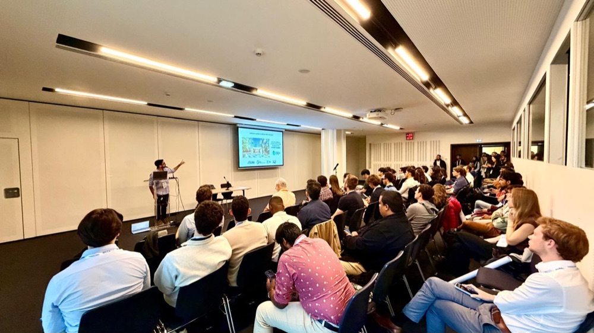
KeynoteENShapeMI Workshop @ MICCAI 2026
Keynote speaker en el workshop ShapeMI de MICCAI 2026, con una charla sobre formas anatómicamente plausibles para segmentación de imágenes médicas con redes neuronales de grafos híbridas.
Página del evento →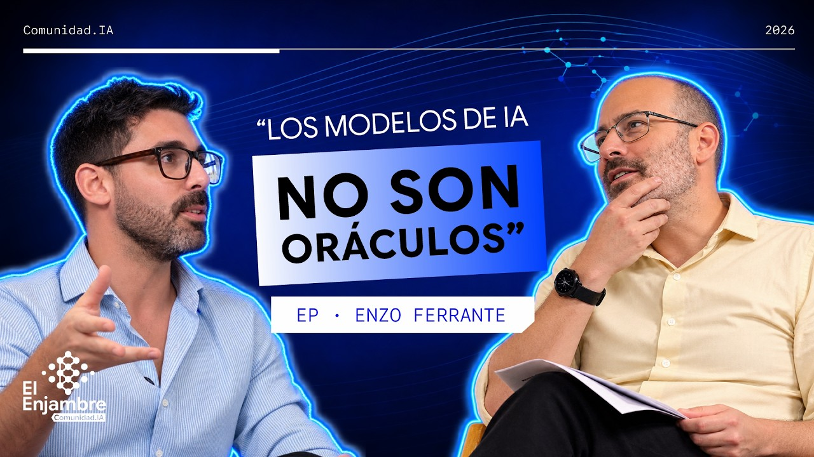
EntrevistaESEl Enjambre IA
Entrevista en El Enjambre IA sobre nuestro trabajo en equidad algorítmica.
Ver en YouTube →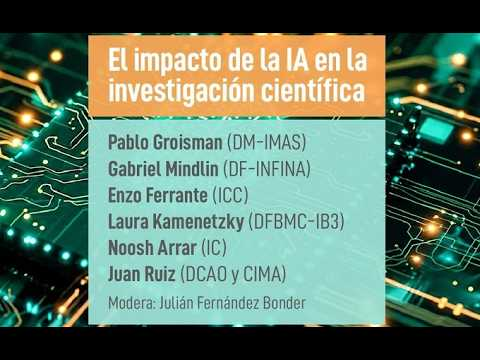
PanelESEl impacto de la IA en la investigación científica, Exactas UBA
Participación en un panel organizado por Exactas UBA, junto a investigadores e investigadoras de la Facultad de Ciencias Exactas y Naturales, sobre cómo la inteligencia artificial está cambiando la investigación científica.
Ver en YouTube →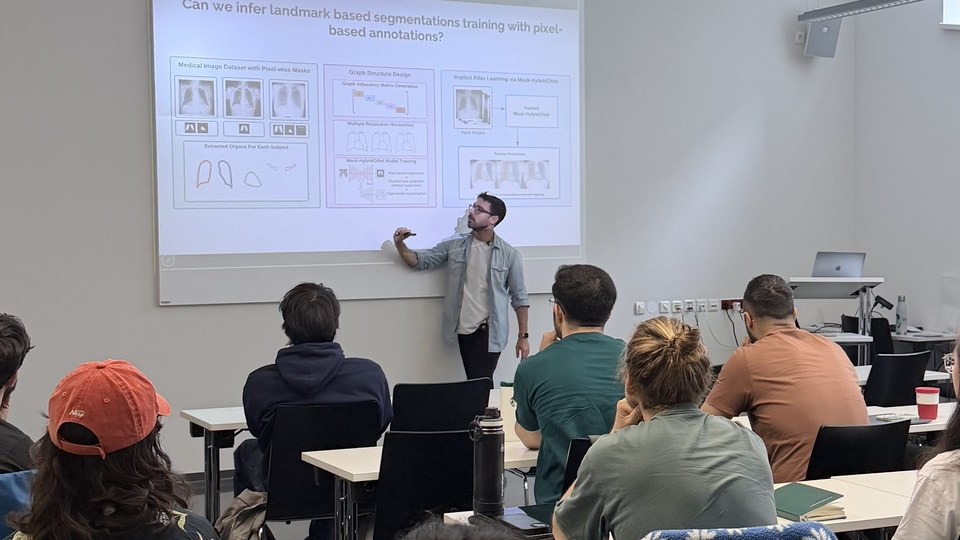
SeminarioENCharla CAIM, Medical University of Vienna
Charla invitada en el seminario del Center for Artificial Intelligence in Medicine (CAIM) de la Universidad Médica de Viena, sobre segmentación anatómica robusta de imágenes médicas.
Página del evento → SeminarioENPattern Recognition Lab, FAU Erlangen-Nürnberg
Charla invitada en el Pattern Recognition Lab de la Universidad de Erlangen-Núremberg, sobre segmentación anatómica robusta de imágenes médicas.
Página del evento → EntrevistaESEl Colectivo
Entrevista en El Colectivo sobre mi trabajo de investigación en inteligencia artificial y sus aplicaciones en salud.
Ver en YouTube →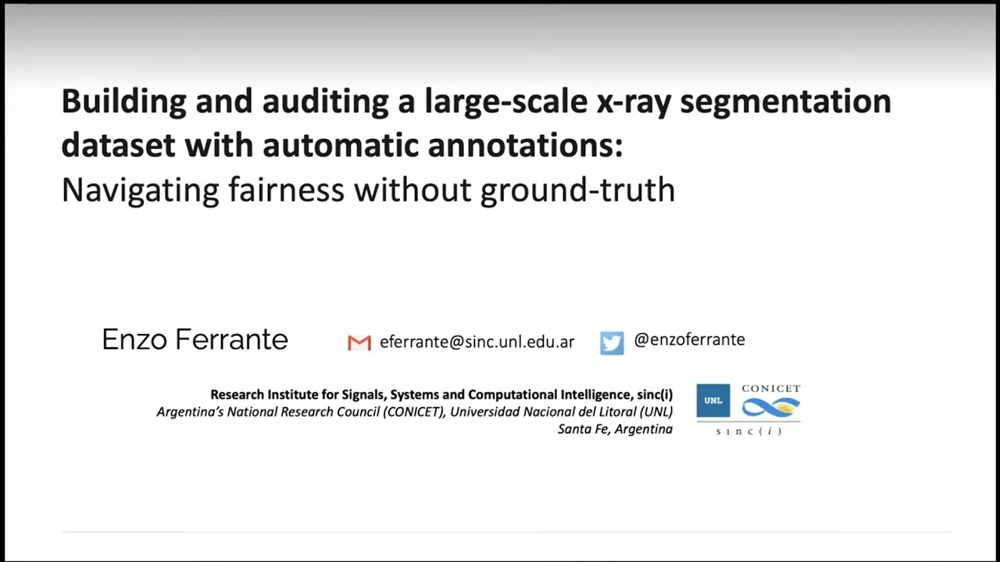
WebinarENDatasets through the Looking Glass, Webinar
Webinar en la serie Datasets through the Looking Glass (en inglés), dedicada a los datos detrás de los sistemas de inteligencia artificial, sobre nuestra experiencia al crear el dataset CheXMask.
Ver en YouTube →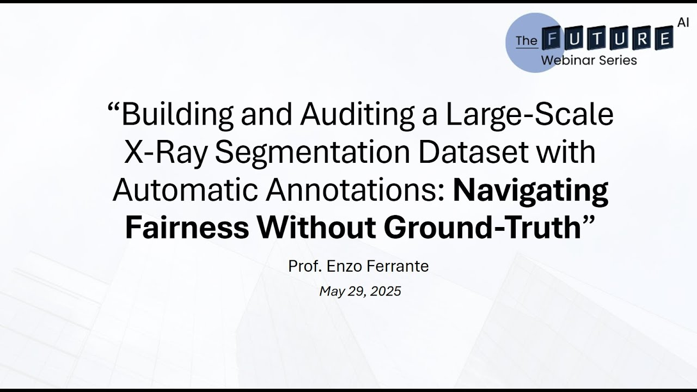
WebinarENFUTURE-AI Webinar #3
Participación en el tercer webinar organizado por la red internacional FUTURE-AI (en inglés).
Ver en YouTube →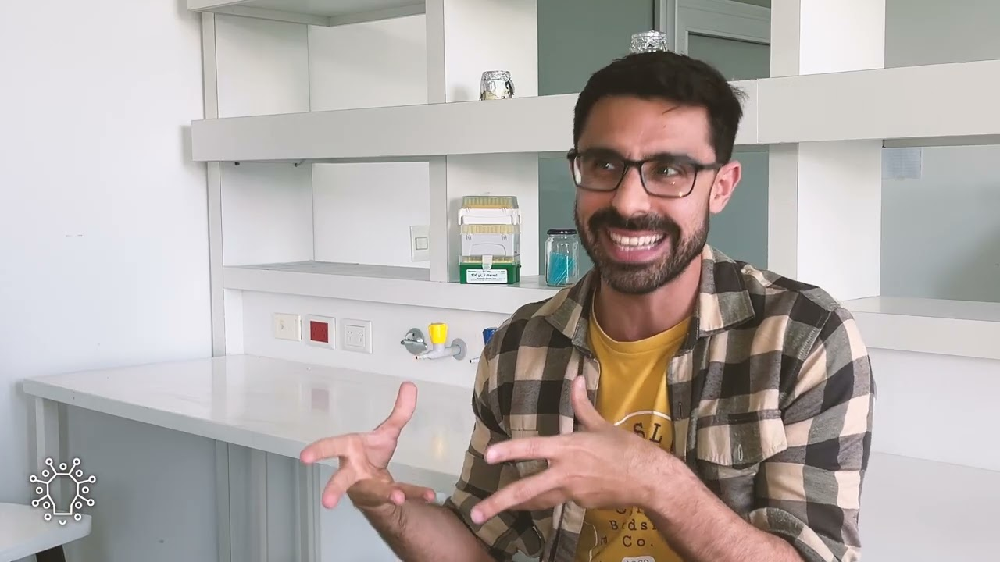
EntrevistaESLAB (Laboratorio de Ideas), Episodio 01
Entrevista con Claudio Martínez en el primer episodio de LAB (Laboratorio de Ideas), en español.
Ver en YouTube →¡Dátame! Las charlas de LCD, Universidad de Buenos Aires
Charla en el ciclo de la Licenciatura en Ciencias de Datos (UBA) con un recorrido por la historia reciente del aprendizaje profundo, desde AlexNet hasta ChatGPT.
Página del evento →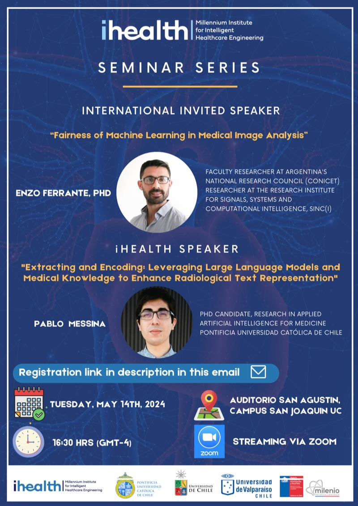
SeminarioESSeminario iHEALTH, Pontificia Universidad Católica de Chile
Seminario invitado en iHEALTH, Pontificia Universidad Católica de Chile, sobre equidad del aprendizaje automático en el análisis de imágenes médicas.
Página del evento → PodcastENAI-ready Healthcare: Fairness in Medical AI
Conversación con Anirban Mukhopadhyay y Henry Krumb (46 minutos, en inglés) sobre equidad en la inteligencia artificial aplicada a la medicina.
Escuchar en Spotify →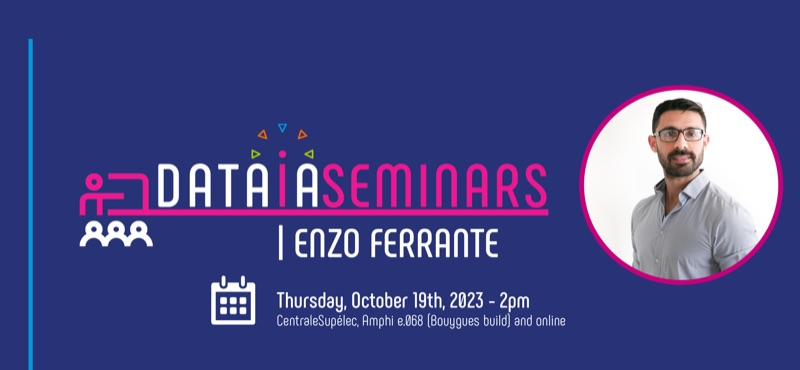
SeminarioENSeminario DATAIA, Université Paris-Saclay
Seminario invitado en DATAIA, Université Paris-Saclay, sobre cómo mejorar la plausibilidad anatómica y auditar la equidad en redes profundas de segmentación.
Ver en YouTube →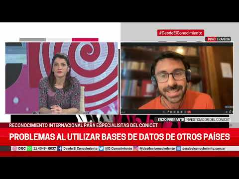
EntrevistaESDesde el Conocimiento
Entrevista en Desde el Conocimiento sobre el uso de inteligencia artificial para predecir diagnósticos de salud.
Ver en YouTube →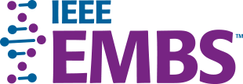
ClasesENIEEE EMBS Summer School on Biomedical Imaging, Cartagena
Clases en la escuela de verano de IEEE EMBS sobre imágenes biomédicas (Cartagena, Colombia), con foco en aprendizaje profundo avanzado para imágenes médicas: plausibilidad anatómica y equidad.
Página del evento → SeminarioENPioneer Centre for AI, Copenhague
Seminario invitado en el Pioneer Centre for AI (Copenhague) sobre equidad del aprendizaje automático en el análisis de imágenes médicas.
Página del evento → PodcastESTN Podcast, Se tildó: “El algoritmo nos discrimina”
Entrevista con Jason Mayne en el podcast Se tildó de TN, titulada “El algoritmo nos discrimina”, sobre sesgo algorítmico.
Escuchar en Spotify →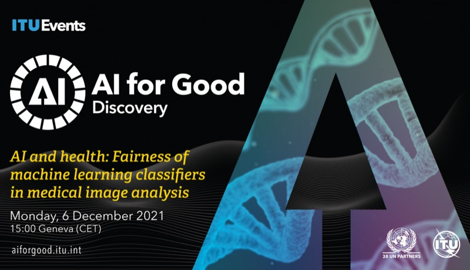
SeminarioENAI for Good, UIT (Naciones Unidas)
Seminario invitado en AI for Good, la plataforma de las Naciones Unidas (UIT), sobre equidad de los clasificadores de aprendizaje automático en el análisis de imágenes médicas.
Página del evento →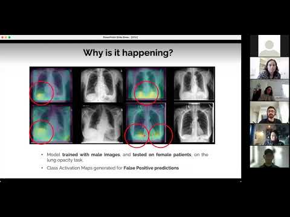
SeminarioENResponsible AI Seminar, Technical University of Denmark
Seminario en la Universidad Técnica de Dinamarca (DTU) sobre sesgo de género en clasificadores de radiografías de tórax.
Ver en YouTube →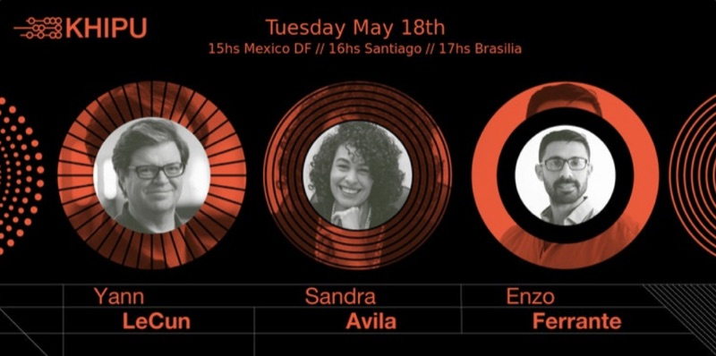
KeynoteENKhipu 2021
Keynote en Khipu 2021 sobre aprendizaje autosupervisado en análisis de imágenes biomédicas, junto a Yann LeCun y Sandra Avila.
Ver grabación →Scientific American: “Health Care AI Systems Are Biased”
Artículo de Scientific American que destaca nuestro estudio de PNAS sobre cómo el desbalance de género en datasets de imágenes médicas genera sesgos en los sistemas de diagnóstico asistido.
Leer artículo →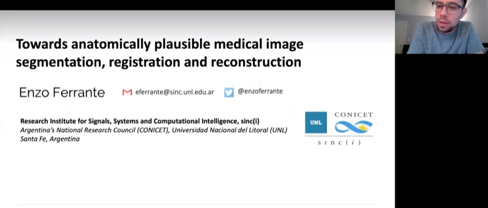
SeminarioENJohns Hopkins University (CIS & MINDS)
Seminario invitado en los centros CIS y MINDS de Johns Hopkins University sobre segmentación, registro y reconstrucción de imágenes médicas anatómicamente plausibles.
Ver grabación →Stanford AIMI Journal Club
Presentación en el journal club de Stanford AIMI de nuestro estudio sobre cómo el desbalance de género en datasets de imágenes médicas produce clasificadores sesgados para diagnóstico asistido por computadora.
Ver en YouTube → PrensaENSTAT News: “AI systems are worse at diagnosing disease when training data is skewed by sex”
Artículo de Rebecca Robbins sobre nuestro estudio de PNAS, que mostró que los clasificadores de radiografías de tórax entrenados con datos que subrepresentan a un sexo son menos precisos para pacientes de ese sexo.
Leer artículo →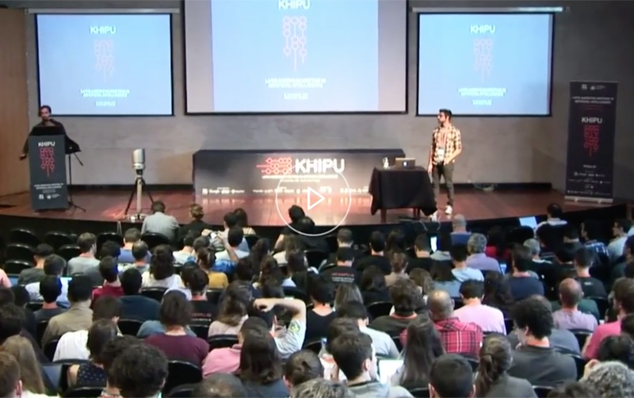
PlenariaENKhipu 2019, Montevideo
Charla plenaria en Khipu 2019 (Montevideo), el primer encuentro latinoamericano de inteligencia artificial, con una introducción a las redes neuronales convolucionales.
Ver en YouTube →